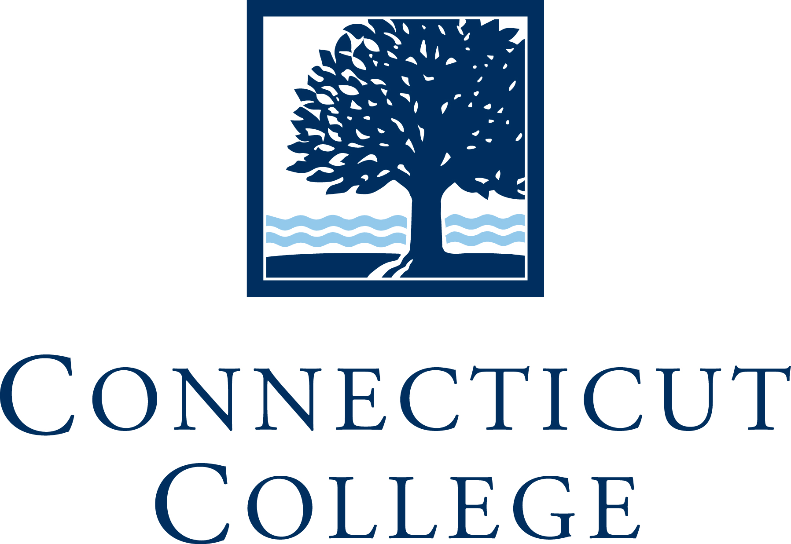
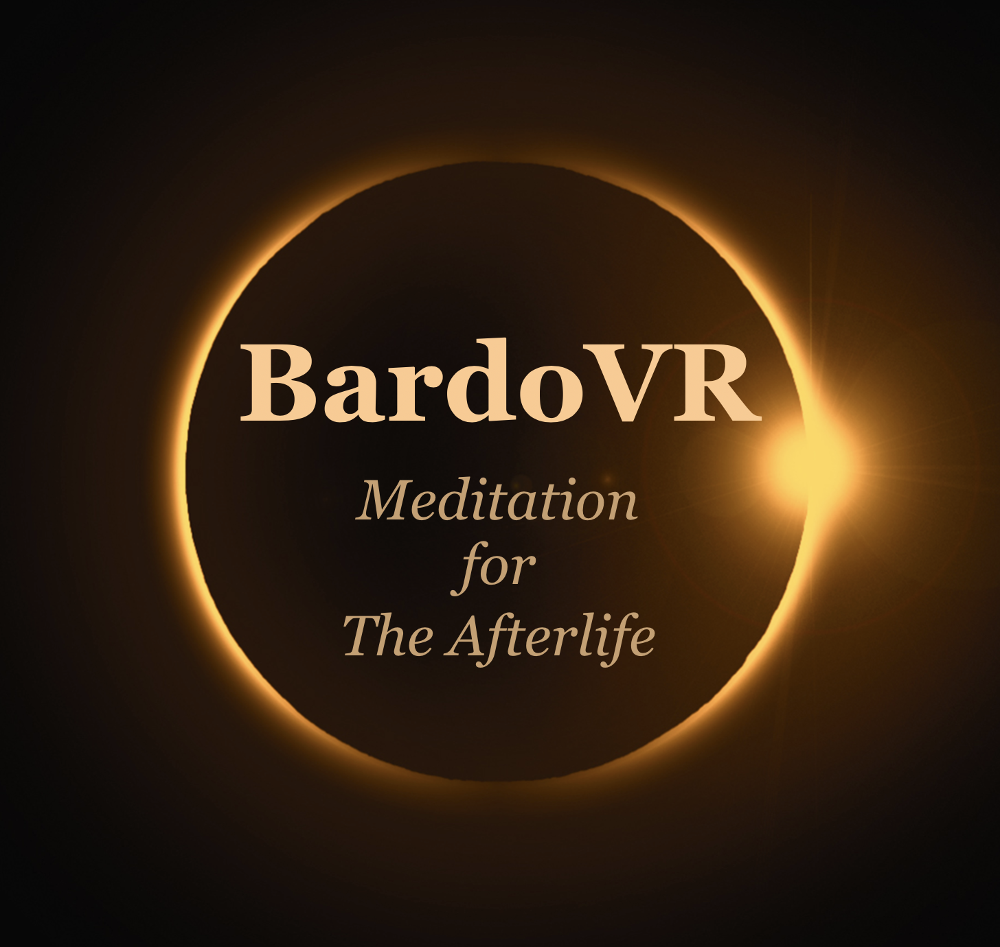
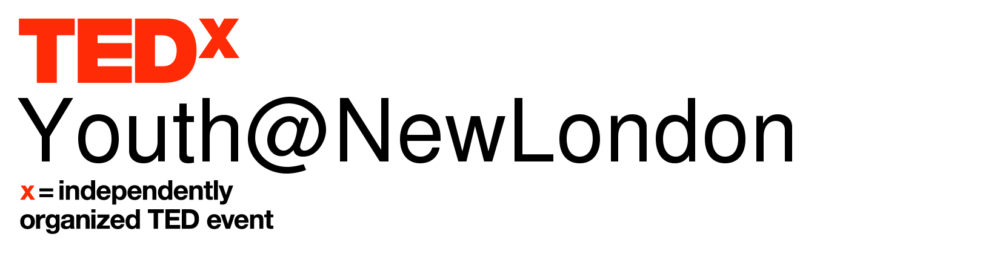

Cameron Aaron is a native of Studio City, CA and graduated from Bridges Academy with a young expert designation after doing Neuroscience and Artificial intelligence research. He is a Junior at Connecticut College in New London, CT and a former Software Engineer at GitHub a subsidiary of Microsoft. Cameron is a double major in Computer Science and Psychology with a minor in Cognitive Science and a Scholar in the Ammerman Center of Arts and Technology. He conducts both Artificial intelligence and Cognitive Neuroscience research. He is currently the head of special events at the Connecticut College TED Club and is in charge of the youth event TEDxYouth@NewLondon. He is a Google product Expert and is currently a moderator for the official Google Android Beta subreddit.
=> "Studio City, CA"
> Cameron.education
=> "Connecticut College"
> Cameron.major
=> "Computer Science and Psychology"
> Cameron.expectedGraduation
=> "May 2021"
> ca.interests
=> ["Art", "Code", "Computational Biology","music", "bicycles", "Traveling"]
> Cameron.workExperience.latest
=> Latest Work Experience
company: "GitHub"
role: "Software Engineering"
startDate: "Sep 2019"
endDate: "Jan 2020"
> Cameron.resume
=> "Cameron_Aaron_Resume.pdf"
> Cameron.thoughts
=> ["@CameronAaron", "Instagram" > Cameron.email
=> ["cameronaaron1@gmail.com"
Résumé
Education
Connecticut College
2017 - 2021
Computer Science and Psychology
New London, CT
Relevant Coursework:
- Genomics
- Biological Psychology
- Psychology Disorders and Dysfunctions
- Discrete Math
- Algorithms
- History of Arts and Technology
- Cyber Security
- Cognitive Neuroscience
- Artificial Intelligence
- Computer Organization
- Computer Networks
- Database Systems
- Software Engineering
- Entertainment Software Design
- Machine Learning
- Cloud Engineering with GCP by Google Cloud
- Google IT Automation with Python
- Google IT Support by Google
- G Suite Administration Specialization
- Google Cloud Architecting with Google Compute Engine
- Cloud Engineering with GCP by Google Cloud
- Architecting with Google Compute Engine
Work Experience
Connecticut College
2017-Current
Summer Science Research Institute Bioinformatics and Computational Biology Researcher/Computational Biology and Informatics Researcher
/CameLAB Neuroscience Lab Research Assistant/Cyber Security and Network Infrastructure Researcher/Robotics and Artificial Intelligence Lab Manager/Artificial Intelligence Research Associate
New London, CT
- Conducted a 2019 audit of the college's security and infrastructure
- Setup internal bug in order to access the network from the outside
- Presented findings to the entire Computer Science department
- Created a detailed report for the Chief information security officer of Connecticut College
- Created Apache spark pipeline to analyze single nucleotide polymorphisms
- Used Google Cloud Life Sciences to Process, analyze, and annotate genomics
- Created algorithms to Analyze medical imaging from DICOM files in order to better identify an abnormality
- Engineered a web app to pull in digital medical records, Biometric data from wearables, and genetic info into one place
- Developed a Python application to collect and analyze EEG data
- Set up experiments using 3D Reach Tracker, EEG, and eye-tracking technology
- Used Matlab to analyze data
- Working on Double Robot,Hardware NN and Autonomous MIP projects in the lab of Computer Science Chair Professor Gary Parker.
C19 Bayshield
2012 - 2013
Backend Engineering Team Lead
Los Angeles, CA
 GitHub
Summer 2019
GitHub
Summer 2019
Software Engineer
San Francisco, CA
- An interdisciplinary role that involves machine learning
- Work with cross-functional stakeholders in Operations, Product, Engineering, and Legal to support product launches
- Develop and execute support strategies that align with product goals
- Provide operational suggestions to scale product support
- Streamline complex processes and implement workflows designed to increase efficiency
- Worked across teams to make the customer's experience even better through engineering efforts
- Worked on GitHub.com
- Worked in Ruby on Rails
BardoVR
Spring 2020
Community Engagement Intern
Berkley, CA
Building Immersive Media Experiences To Promote Health & Wellbeing. We are starting with AfterDeath AfterDeath is a game-based, interactive virtual reality simulation of the Tibetan Book of the Dead, which describes the journey consciousness takes from the moment of death until its rebirth in another form. Using the mechanism of an immersive psychedelic “trip” through otherworldly environments, AfterDeath will be both a unique gaming experience and a pathway to understanding personal attitudes, desires, and aversions. Our goal is to create an awe-inspiring immersive “game” that is also a profound tool for psychological and spiritual development. The interactive modalities described in the Tibetan Book of the Dead train us to employ calm focus, equanimity, and compassion to attain more blissful states. These will become successful strategies in the AFTERDEATH “game”. Future enhancements will include multiple levels and environments, and the incorporation of increasingly sophisticated interactive technologies, including bio, neuro and haptic feedback.
 Google
2017-Current
Google
2017-Current
Product Expert Google Fi and Google Pixel
San Francisco, CA
Works as a volunteer on the Google product forums to help answer user questions. I was recognized for my good service by being asked by Google to join the product expert program
TED
2015 -Current
TED -Ed Club Leader and Head of Special Events TEDxConnecticut College Organizer TEDxYouth@Newlondon
New York, NY
- Spearheads TEDxYouth@New London
- Brainstormed new events for the club
- Manages community service
{kind=link}